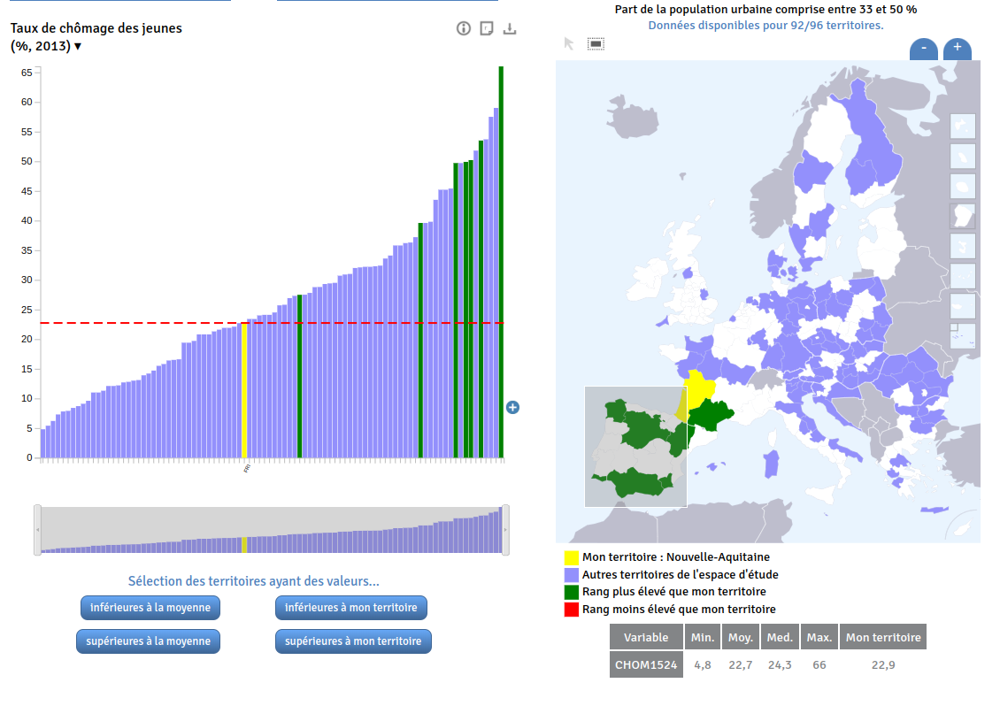

CM/TP Séance 8 - Vues synchronisées, dashboard, Leaflet, Plot et d3.js
BUT Science des données - 3ème année - Université Grenoble Alpes
Objectifs de la séance
Cette séance s’inscrit dans la suite du TP n°8 et a pour objectifs de :
- continuer à se familiariser avec la création de pages HTML contenant des visualisations de données interactives,
- mettre à jour un composant HTML ou un graphique réalisé avec Plot en fonction d’une action de l’utilisateur (clic, survol, etc.),
- découvrir D3.js,
Nous utiliserons dans cette séance les statistiques des bibliothèques de Grenoble.
Vues synchronisées
En visualisation de données interactives, il est souvent utile de pouvoir synchroniser plusieurs vues (ou plusieurs composants) entre elles. Cela implique que les données affichées dans les différents composants soient les mêmes et que les interactions dans un composant soient répercutées dans les autres composants.
Par exemple, si vous cliquez sur la barre correspondant à une année dans un histogramme, les données affichées dans un graphique en courbes doivent être celles de l’année sélectionnée ; si l’on sélectionne plusieurs entités sur une carte, les données correspondantes affichées dans un histogramme vont être mises en évidence ; etc.

Différences avec Observable
Vous avez vu comment réaliser des graphiques en fonction d’une valeur sélectionnée par exemple dans un menu déroulant lors des précédents TP. Cela était particulièrement facile à réaliser avec Observable puisque les cellules sont réévaluées automatiquement lors du changement de valeur d’une variable.
Dans une page Web classique, cela n’est pas le cas (il existe toutefois de nombreuses bibliothèques, telles que React.js, Vue.js, Solid.js, etc., qui permettent d’obtenir un comportement réactif similaire).
Par exemple, si nous disposons d’un menu déroulant permettant de sélectionner une année, il va être nécessaire d’écouter manuellement le changement de valeur de ce menu et de mettre à jour les graphiques en conséquence :
<select id="select-year">
<option value="2019">2019</option>
<option value="2020">2020</option>
<option value="2021">2021</option>
</select>
<div id="container-viz"></div>On obtient un menu déroulant permettant de sélectionner une année :
Il est ensuite nécessaire de récupérer le menu déroulant, d’écouter le changement de valeur de celui-ci et de mettre à jour les graphiques en conséquence :
// Un jeu de données d'exemple
const dataset = [
{ fruit: 'apple', value: 8, year: 2019 },
{ fruit: 'apple', value: 12, year: 2020 },
{ fruit: 'apple', value: 15, year: 2021 },
{ fruit: 'banana', value: 10, year: 2019 },
{ fruit: 'banana', value: 6, year: 2020 },
{ fruit: 'banana', value: 8, year: 2021 },
{ fruit: 'orange', value: 7, year: 2019 },
{ fruit: 'orange', value: 12, year: 2020 },
{ fruit: 'orange', value: 12, year: 2021 },
];
// Une fonction qui crée le diagramme en barre pour une année donnée
function createViz(year) {
// Filtrer les données pour l'année sélectionnée
const data = dataset.filter(d => d.year === year)
// Créer le diagramme en barre avec Plot
return Plot.plot({
marks: [
Plot.barY(data, { x: "fruit", y: "value", fill: "fruit" }),
Plot.frame()
]
});
}
// On attend le chargement de la page pour exécuter le code
document.addEventListener('DOMContentLoaded', async function () {
// On récupère les éléments du DOM
const selectYear = document.getElementById("select-year");
const vizContainer = document.getElementById("container-viz");
// On créé le graphique pour l'année 2019
vizContainer.innerHTML = `${createViz(2019).outerHTML}`;
// On écoute l'événement "change" sur le select et on définit une fonction qui sera
// exécutée quand l'événement est déclenché
selectYear.addEventListener("change", (event) => {
// L'année sélectionnée (attention, c'est une chaîne de caractères)
// donc on le convertit en nombre avec '+'
const year = +event.target.value;
// Mettre à jour le graphique
vizContainer.innerHTML = createViz(year).outerHTML;
});
});C’est cette logique (définir un comportement à adopter lorsqu’un événement est déclenché et mettre à jour les composants existants) que nous allons utiliser pour synchroniser plusieurs composants entre eux.
À titre de comparaison, le même comportement, dans Observable, en bénéficiant de la réactivité des cellules : ici.
Exercice - Création d’un “tableau de bord”
Nous allons maintenant créer un tableau de bord assez simple permettant de visualiser les statistiques des bibliothèques de Grenoble.
Ce jeu de données contient plusieurs statistiques :
- Nombre de prêts annuels de 2008 jusqu’à 2016
- Nombre d’inscrits de 2008 jusqu’à 2016
- Nombre d’emprunteurs de 2008 jusqu’à 2016
- Nombre de visiteurs de 2008 jusqu’à 2016
Le tableau de bord sera composé de plusieurs composants :
- une carte Leaflet affichant l’emplacement des bibliothèques ainsi que leur nom lors du survol du curseur,
- un graphique en courbes affichant le nombre global (c’est-à-dire de toutes les bibliothèques) de prêts annuels en fonction de l’année,
- un graphique en courbes affichant le nombre global d’inscrits en fonction de l’année,
- un graphique en courbes affichant le nombre global d’emprunteurs en fonction de l’année,
- un graphique en courbes affichant le nombre global de visiteurs en fonction de l’année.
Lors du clic sur une bibliothèque sur la carte, ou lors de la sélection d’une bibliothèque spécifique dans le composant <select>, les graphiques doivent être mis à jour pour afficher les données de la bibliothèque sélectionnée plutôt que les données globales.
Par ailleurs, si la bibliothèque a été sélectionnée via la carte, l’en-tête du composant <select> doit être mis à jour pour afficher le nom de la bibliothèque sélectionnée.
Les principales étapes de la création du tableau de bord sont détaillées ci-dessous.
Structure du document HTML
Vous devez créer un nouveau document HTML (par exemple index.html) et y ajouter :
- l’import du fichier CSS de leaflet :
<link rel="stylesheet" href="https://unpkg.com/leaflet@1.9.4/dist/leaflet.css"
integrity="sha256-p4NxAoJBhIIN+hmNHrzRCf9tD/miZyoHS5obTRR9BMY="
crossorigin=""/>- l’import du fichier JS de leaflet :
<script src="https://unpkg.com/leaflet@1.9.4/dist/leaflet.js"
integrity="sha256-20nQCchB9co0qIjJZRGuk2/Z9VM+kNiyxNV1lvTlZBo="
crossorigin=""></script>- l’import du fichier JS de D3.js :
<script src="https://cdn.jsdelivr.net/npm/d3@7"></script>- l’import du fichier JS de Plot :
<script src="https://cdn.jsdelivr.net/npm/@observablehq/plot@0.6"></script>- par ailleurs, vous aurez besoin d’inclure le fichier JS qui contiendra votre code JavaScript :
<script src="index.js"></script>- enfin, vous aurez besoin d’écrire des règles CSS pour agencer les différents éléments de votre page, soit dans un fichier CSS externe, soit dans une balise
<style>située elle aussi dans le<head>de votre document HTML :
<style>
/* Vos règles de style ici */
</style>Chargement des données
Le jeu de données est fourni sous forme de plusieurs fichiers (code + nom des bibliothèques, nombre de prêts, nombre d’inscrits, nombre d’emprunteurs, nombre de visiteurs). J’ai rassemblé ces jeux de données sous forme d’un seul fichier GeoJSON qu’il est possible de récupérer à l’URL suivante : https://gist.githubusercontent.com/mthh/ff8f4bcacf10a0afe6d1a19556b5cfe7/raw/1f246583a8de3232e6859854ac3315af457626da/BIBLIOTHEQUES_VDG.geojson.
Il y a une entrée par bibliothèque et chaque entrée contient, en plus de la géométrie, les informations suivantes :
- Code de la bibliothèque,
- Nom de la bibliothèque,
- Nombre de prêts annuels de 2008 jusqu’à 2016
- Nombre d’inscrits de 2008 jusqu’à 2016
- Nombre d’emprunteurs de 2008 jusqu’à 2016
- Nombre de visiteurs de 2008 jusqu’à 2016
Comme précédemment, nous utilisons la fonction fetch pour récupérer les données :
// Récupération des données (dans une fonction asynchrone car on utilise "await")
const resp = await fetch('https://gist.githubusercontent.com/mthh/ff8f4bcacf10a0afe6d1a19556b5cfe7/raw/1f246583a8de3232e6859854ac3315af457626da/BIBLIOTHEQUES_VDG.geojson');
const data = await resp.json();Création de la carte Leaflet
Sur la base des connaissances acquises dans le TP précédent, vous devez créer une conteneur pour votre carte Leaflet dans le fichier HTML et écrire le code JavaScript permettant de l’instancier et d’afficher les bibliothèques de Grenoble. Lors du survol sur un marqueur de bibliothèque, le nom de la bibliothèque doit être affiché dans une popup.
Création d’un élément <select> pour sélectionner une bibliothèque
Ajout de l’élément dans le document HTML :
<select id="select-bib">
</select>Remplissage de l’élément avec les noms des bibliothèques :
const selectBib = document.getElementById("select-bib");
// On ajoute une première entrée qui correspond à quand aucune bibliothèque n'est sélectionnée
const bibs = ... // Un tableau contenant les noms des bibliothèques
const ids = ... // Un tableau contenant les identifiants des bibliothèques
// On itère sur les bibliothèques pour ajouter une entrée par bibliothèque
// (on affiche le nom complet de la bibliothèque et on utilise son code dans le champ "value")
for (let i = 0; i < bibs.length; i++) { // On peut aussi utiliser bibs.forEach((bib, i) => { ... })
const option = document.createElement("option");
option.text = bibs[i];
option.value = ids[i];
selectBib.appendChild(option);
}Création des graphiques
Vous devez créer 4 graphiques en lignes brisées affichant les données globales (c’est-à-dire de toutes les bibliothèques) de prêts, d’inscrits, d’emprunteurs et de visiteurs en fonction de l’année.
Créez une fonction, responsable de la création d’un graphique, qui prend en paramètre le nom de la bibliothèque à afficher (ou null si on souhaite afficher les données globales) et qui retourne un graphique réalisé avec Plot).
Comme souvent, il va être nécessaire de transformer les données en fonction du type de graphique à réaliser et pour les adapter au format attendu par Plot.
// Exemple de fonction
function makePlotInscrits(dataset, bibliotheque) {
if (!bibliotheque) {
const dataInscrits = ... // On prépare les données pour l'ensemble des bibliothèques
// On retourne le graphique
return Plot.plot({
// ...
});
} else {
const dataInscrits = ... // On prépare les données pour la bibliothèque sélectionnée
// On retourne le graphique
return Plot.plot({
// ...
});
}
}Référez-vous au premier extrait de code de ce TP pour voir comment mettre à jour le contenu d’un élément HTML avec le contenu d’un graphique Plot.
Agencement des éléments dans la page
Afin d’agencer les différents éléments dans une page HTML, il est nécessaire d’avoir recours au langage CSS.
En effet, vous avez probablement remarqué que lorsque vous créez un élément <div> dans une page HTML, celui-ci est affiché sur une ligne différente (une nouvelle ligne) des autres éléments.
Il est toutefois souvent souhaitable d’afficher plusieurs éléments HTML “en bloc” (div, section, etc.) sur une même ligne.
Ceci est possible de plusieurs manières :
- en utilisant la propriété CSS
display: flexet la propriétéflex-direction: rowsur le conteneur des éléments à afficher sur la même ligne (il est ensuite nécessaire de définir une largeur pour chacun des éléments). - en utilisant la propriété CSS
display: gridsur le conteneur des éléments à afficher sur la même ligne (il est ensuite nécessaire de définir une largeur pour chacun des éléments), - en utilisant la propriété CSS
display: inline-blocksur les éléments à afficher sur la même ligne, - en utilisant la propriété CSS
float(avec la valeurleftouright) sur les éléments à afficher sur la même ligne.
Les solutions à privilégier sont display: flex et display: grid. Cf. exemple vu en cours.
D’autres exemples traitant de ce sujet :
- Sur Mozilla Developper Network : Basic_concepts_of_flexbox et Basic_Concepts_of_Grid_Layout,
- Sur W3schools How To - Two Column Layout, How To - Three Column Layout et How To - Four Column Layout,
- https://dev.to/dawnind/3-ways-to-display-two-divs-side-by-side-3d8b.
Pour info : Création / remplacement des graphiques vs. mise à jour des graphiques
Dans les exemples précédents, nous avons vu comment créer des graphiques avec Plot et comment remplacer les graphiques existants par de nouveaux graphiques.
Cette technique est suffisante, notamment lorsque la création des graphiques est rapide. C’est d’ailleurs la technique qui est conseillée dans la documentation de Plot (et qui est utilisée dans Observable puisque les cellules sont réévaluées automatiquement lors du changement de valeur d’une variable).
Dans certains cas, il peut être intéressant de mettre à jour les graphiques existants plutôt que de les remplacer. Par exemple, dans l’exemple qui suit, la mise à jour du graphique plutôt que son remplacement permet de mieux suivre l’évolution du rang de chacune des marques représentées.
On aura généralement recours à D3.js (voir le notebook indiqué ci-dessous pour une introduction à D3.js) pour réaliser ce type de graphiques animés, mais il reste possible de combiner Plot et D3.js pour obtenir un résultat similaire (comme dans le notebook “Plot: Animate a bar chart (v2)” de @Fil).
Voir aussi :
Pour aller plus loin - D3.js
Certains types de graphiques peuvent ne pas être réalisables avec Plot. Dans ce cas, il est possible de recourir à D3.js. Cette bibliothèque JavaScript permet de créer des graphiques complexes et personnalisés, mais elle est également plus complexe à prendre en main que Plot.
Voir le notebook Faire des graphiques avec D3.js.
En fonction du temps restant, essayez d’intégrer un graphique réaliser avec D3.js dans la page HTML que vous avez créée pour cet exercice (par exemple un diagramme circulaire).
Correction : TP8.zip